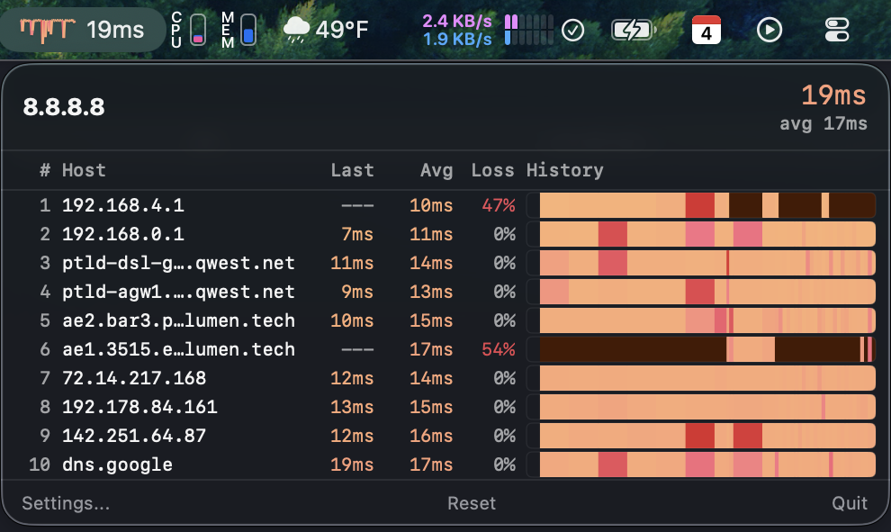
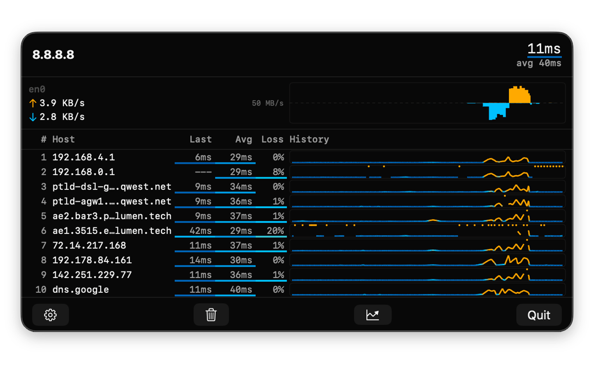
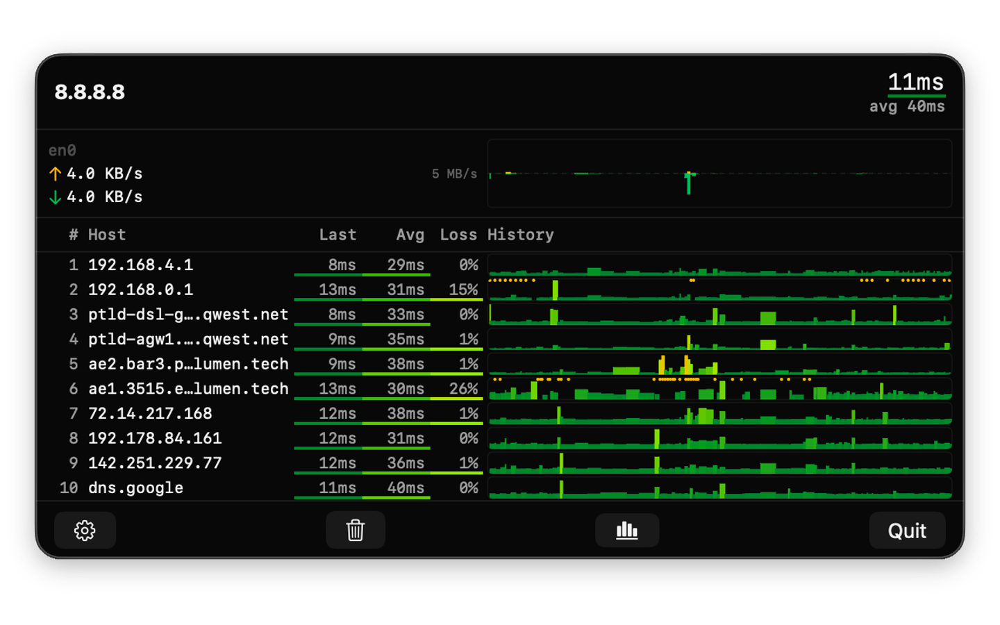
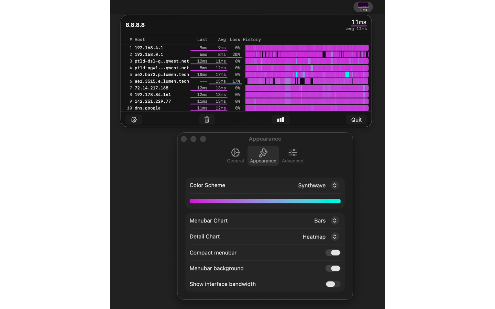

Continuous graphical traceroute monitoring that lives in your macOS menubar.

See latency, packet loss, and hostname for every hop between you and your target. Updated continuously.
A tiny chart right in your menubar shows destination latency at a glance, so you always know how your connection is doing.
Choose from heatmap, sparkline, and vertical bar visualizations across 15 carefully designed color schemes.
Uses unprivileged ICMP sockets. Runs fully sandboxed inside the macOS App Sandbox with no elevated permissions.
See real-time upload and download throughput for your active network interface alongside your traceroute.
No analytics, no telemetry, no accounts. All data stays in memory and is discarded when the app closes.
Multiple chart styles and color themes to match your vibe.



Free to download. Requires macOS 14.6 or later.
Install and update from the terminal.
brew tap tracebar-app/tracebar
brew install --cask tracebar
brew upgrade --cask tracebar
TraceBar collects no data and contacts no servers. Your network diagnostics stay on your Mac. Read the privacy policy.